|
|
eCourts Portal of Western Australia - Help: Criminal Information |

Record Service on a Prosecution Notice
A Prosecuting Authority can record service on a lodged Prosecution Notice with a Court Hearing Notice, Summons or Notice to Attend.
A Prosecuting Agency may be required to re-serve an Accused Individual or Organisation with a Prosecution Notice that has already been lodged with the Court.
01. Open eCourts Portal homepage. Click on Criminal Information.
The Conditions of Access page opens.
02. Select the Checkbox “I have read and understood the Conditions of Access to the eCourts Portal and agree that this information will be accessed for professional purposes only.”
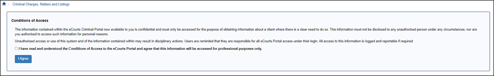
03. Select I Agree.
The Search screen opens.
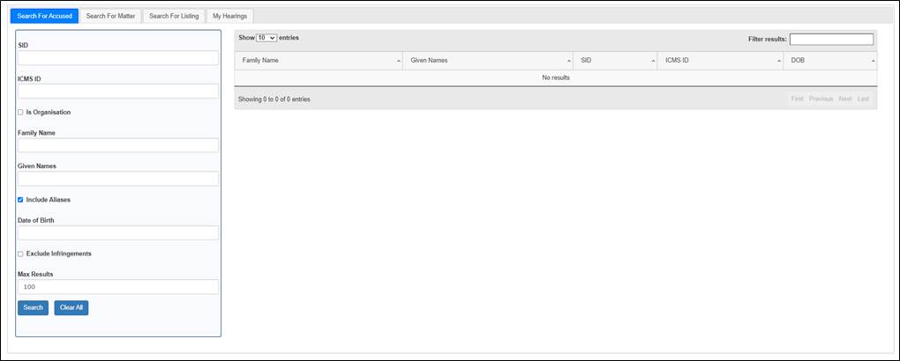
04. Search for Accused tab is highlighted.
Enter the Accused details.
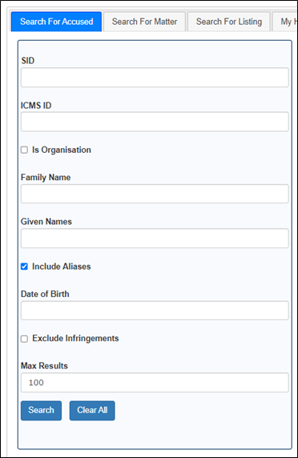
- SID – Enter the unique SID number (WA Police).
- ICMS ID – Enter the unique ICMS ID number (if known).
- Is Organisation – Select the checkbox if you are searching for an organisation.
- Organisation Name – Enter the name of the organisation.
- Family Name – Enter the surname of the accused Individual.
- Given Names – Enter the given names of the accused Individual.
- Include Aliases – Checkbox defaults to selected. Unselect if you don’t want include alias names in your search.
- Date of Birth – Enter the accused person’s date of birth to narrow down results.
- Exclude Infringements – Checkbox defaults to unselected. Select the checkbox if you want to exclude infringements in your search.
- Max Results – Default to 100 search results.
05. Select Search.
Search results display.
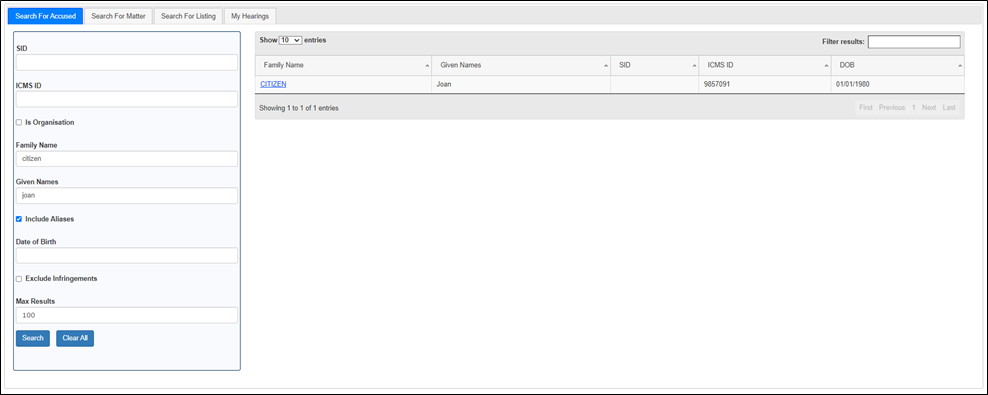
06. Select Family Name link.
The Accused Details page is displayed.
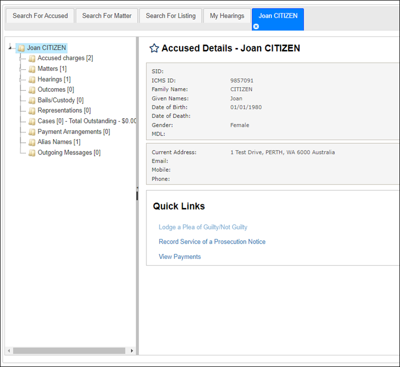
07. Go down to Quick Links.
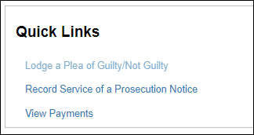
08. Select Record Service of a Prosecution Notice link.
NOTE: This link is only accessible by registered eCourts Portal prosecuting agencies.
The Select a Prosecution Notice to Record Service for [Accused Name] page opens.
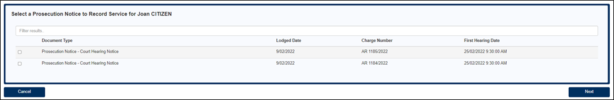
NOTE: Only prosecution notices lodged by the prosecuting agency will display.
09. Select the prosecution notice to record service on. The Enter Service Details page opens.
Enter the Accused Service Details.
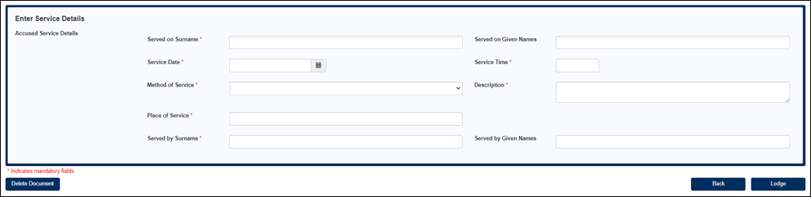
- Served on Surname – The surname of the Accused is automatically displayed (mandatory field)
- Served on Given Names – The given names of the Accused is automatically displayed
- Service Date – Enter the date the prosecution notice was served on the Accused (mandatory field)
- Service Time – Enter the time the prosecution notice was served on the Accused (mandatory field)
- Method of Service – Select an option from the dropdown box (mandatory field)
- Description – A description automatically displays when the Method of Service is selected (mandatory field)
NOTE: The Description field is also an editable field
- Place of Service – Enter the place of service (mandatory field)
- Served by Surname – Enter surname of whom served the prosecution notice on the Accused (mandatory field)
- Served by Given Names – Enter the given names of whom served the prosecution notice on the Accused
09A. If the prosecution notice to record service on a Children’s Court matter.
Who did you serve? Select Accused, Responsible Adult or Both.
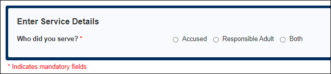
09B. If Accused is selected. Enter the Accused Service Details.
09C. If Responsible Adult is selected. Was Responsible Adult service successful? Select Yes or No.
If Yes was selected.
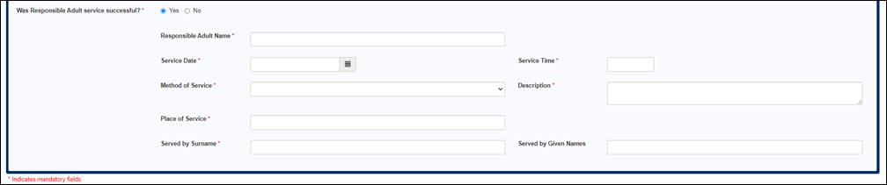
- Responsible Adult Name – Enter the Responsible Adults given name and surname (mandatory field)
- Service Date – Enter the date the prosecution notice was served on the Responsible Adult (mandatory field)
- Service Time – Enter the time the prosecution notice was served on the Responsible Adult (mandatory field)
- Method of Service – Select an option from the dropdown box (mandatory field)
- Description – A description automatically displays when the Method of Service is selected (mandatory field)
Note: The Description field is also an editable field.
- Place of Service – Enter the place of service (mandatory field)
- Served by Surname – Enter surname of whom served the prosecution notice on the Responsible Adult (mandatory field)
- Served by Given Names – Enter the given names of whom served the prosecution notice on the Responsible Adult
If No was selected. Enter the attempted service details.
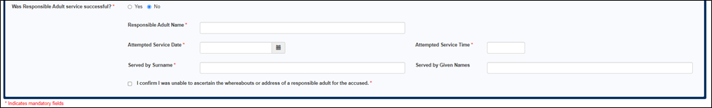
- Responsible Adult Name – Enter the Responsible Adults given name and surname (mandatory field)
- Attempted Service Date – Enter the attempted service date (mandatory field)
- Attempted Service Time – Enter the attempted service time (mandatory field)
- Served by Surname – Enter surname of whom served the prosecution notice on the Accused (mandatory field)
- Served by Given Names – Enter the given names of whom served the prosecution notice on the Accused
If Both was selected. Enter the service details for the accused and the responsible adult.
10. Select Lodge.
A confirmation message displays for a successful lodgment.
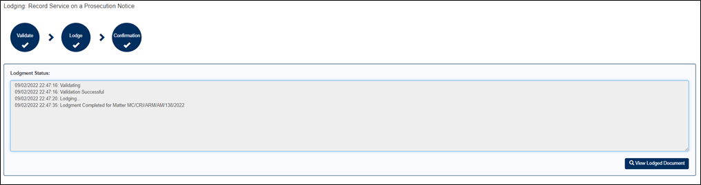
Note: The View Lodged Document button will display the validation message “This lodgment does not produce a viewable document.”
11. A prosecuting agency can view a record of this transaction by going to Manage Lodgments. The user can also view and recommence any saved transactions from this process. The View Document button has the same message as advised in the previous step.
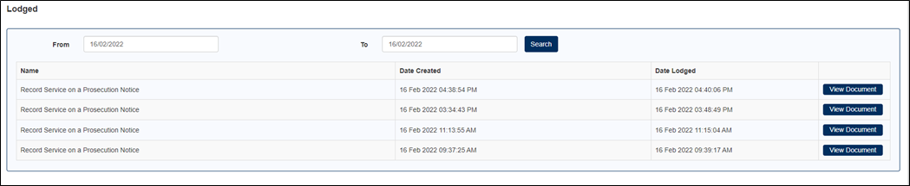
Links:
eCourts Portal – Lodge a Prosecution Notice
eCourts Portal – Lodge a Prosecution Notice – Notice to Attend – Childrens Court